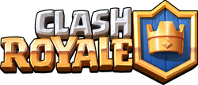

클래시로얄

헤이데이, 클래시 오브 클랜, 붐비치를 제작한 슈퍼셀에서 발표한 모바일용 CCG 게임. 이름에서 알 수 있듯이 클래시 오브 클랜의 세계관을 기초로 제작되었다. 2016년 3월 2일 iOS, 안드로이드 모두 전세계 동시 발매되었다. 1억 다운로드를 돌파한 인기 게임이다.
- 플레이방식1
- 플레이방식2
- 플레이방식3
- 플레이방식4
- 여담
사실 게임 이름이 Royal이 아니고 Royale이다.(물론 Royale에도 Royal처럼 '왕의, 왕립의'라는 뜻이 있기는 하다.) 반면 로얄 아레나와 로얄 자이언트, 로얄 고스트는 모두 Royal 이고 '로열'이라고 읽어야 하지만 전부 '로얄'로 표기했다. 그리고 Royale이 생소한 단어이다 보니까 Royale을 검색하면 클래시 로얄에 관련된 내용들이 같이 뜬다. 사실 arena 도 아리나 지만 아레나라고..
한국시간으로 12월 9일에 일본 애니메이션 광고가 나왔다. 작화가 원피스보다 좋아보인다는 댓글은 덤(…). 노래는 게스노키와미오토메가 담당하였다.
유재석이 이 게임을 하는 것으로 보인다. 무한도전에서 지인이 카드지원 잘 안해준다고 언급한 정황으로 보아 이 게임으로 추정된다. 해당 지인의 인스타 하하와 같이 한다고.
2018 아시안게임에 시범종목으로 채택되었다!
클래시 어 라마에서는 클래시 오브 클랜의 세계관을 다루는데, 클래시 로얄과 클래시 오브 클랜의 세계관이 같기 때문에, 클래시 로얄 세계관도 등장한다. 특히 클래시 어 라마/시즌 2에서는 클래시 로얄 유닛이 주연이 되는 에피소드가 많아졌다.
현재 운용하는 슈퍼셀 모바일 게임 중 유일하게 세로로 플레이하는 모바일 게임이다.
한때는 국내 다수의 프로게임단에서 팀을 운영했었지만 2020년 11월에 팀 타이밍(DRX)이 해체된걸 끝으로 2021년 이후로는 국내에 운영중인 게임단은 없다.